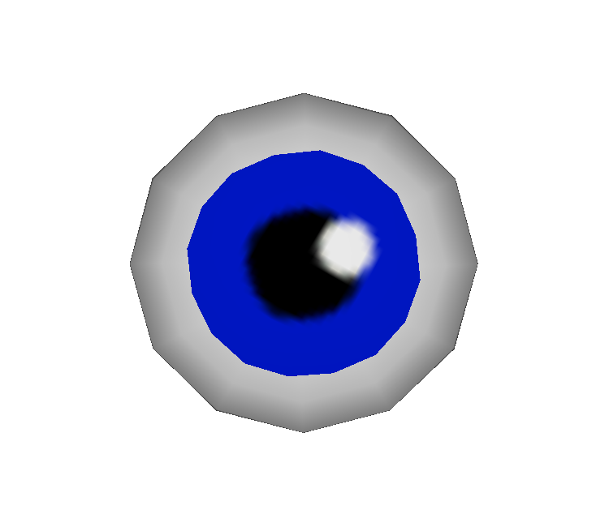
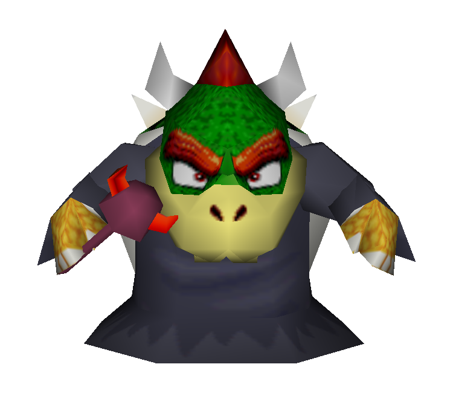
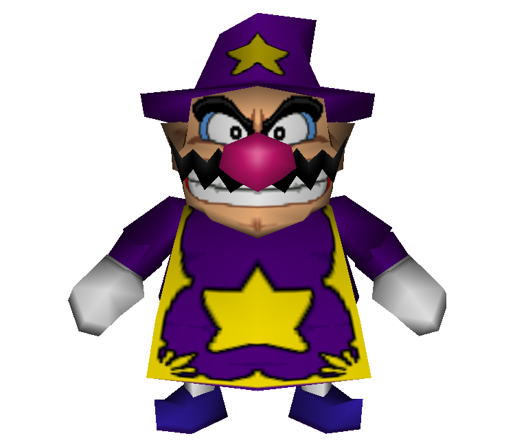
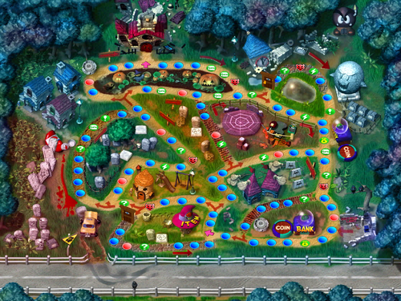
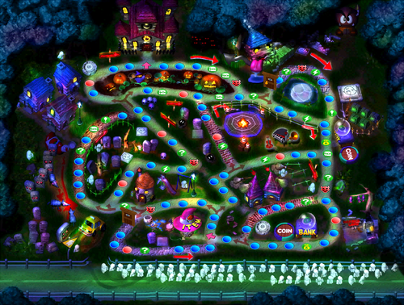
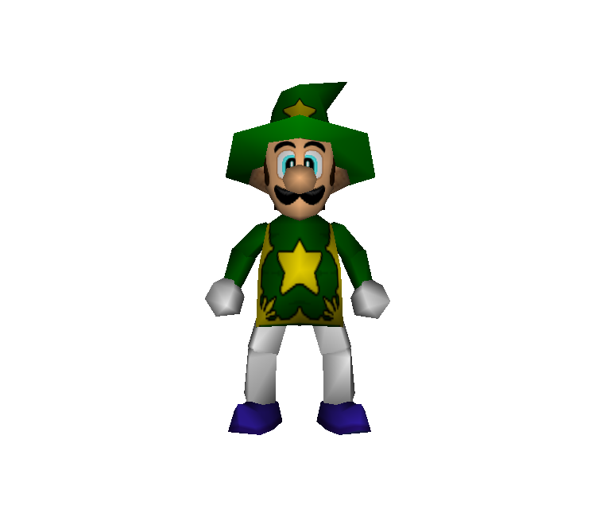
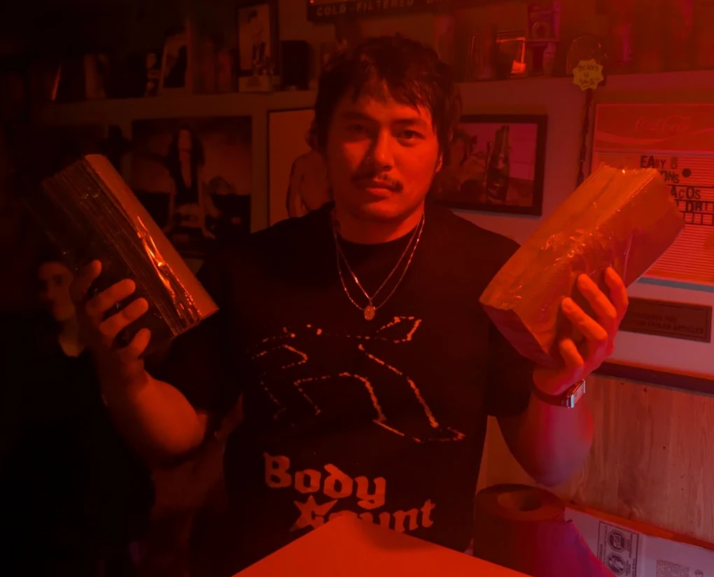

hello please come to my house on the 30th of october 7p.m. (gmt of course) to play a 50 turn mario party 2 horror land in hono(u)r of holloween.
interesting notes:


yes, learn about the minigames. kevin and I will teach you games and the best strategies and we will always give good advice even if it means we are hurting our own chances at victory.
no but if you come dressed like luigi in horror land then you will receive one (1) shot of rakija

it is the only game kevin and i agree on because it is the best game ever created on the planet earth amen
only four (4) people can play at a time so no, as long as we have two (2) more people to play with us then everything will be ok. feel free to chill and watch us play. i tend to get very sweaty when i play n64 games so i will probably take my sweater (jumper) off at some point
this guy asked for me to make it
